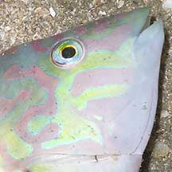
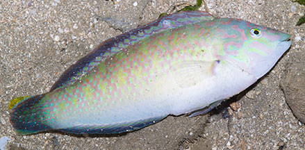
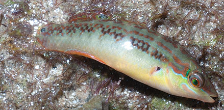
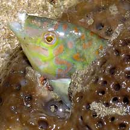
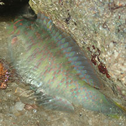
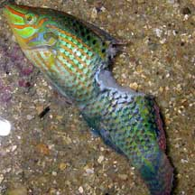
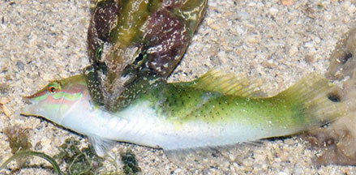
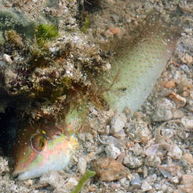
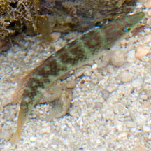

|
|
| fishes text index | photo index |
| Phylum Chordata > Subphylum Vertebrate > fishes > Family Labridae |
| Diamond
tuskfish Halichoeres nigrescens Family Labridae updated Sep 2020 Where seen? This rather fat and colourful but little wrasse is sometimes seen on our Northern shores, among coral rubble near seagrasses. Sometimes seen high and dry on sand or stuck inside coral rubble or sponges. Some seen were very pale, others were more brightly coloured. It was previously known as Halichoeres dussumieri. Features: To about 16cm, but those seen are usually about 5-8cm long. Usually colourful: silvery to greenish with red, yellow and blue markings forming 4-5 broad bars across the body. Dark spot in the middle of the front half of the dorsal fin, another spot at the pectoral fin base. Snout pointed, sharp teeth. |
 This fish has sharp teeth! |
 Chek Jawa, Aug 05 |
 Tanah Merah, Apr 12 |
 Stuck inside a sponge but still alive.Chek Jawa, Jun 05 |
|
| Diamond tuskfishes on Singapore shores |
On wildsingapore
flickr
|
| Other sightings on Singapore shores |
 East Coast PCN, Aug 22 Photo shared by Kelvin Yong on facebook. |
 St. John's Island, Jan 06 Photo shared by Toh Chay Hoon on her flickr. |
 Caught by a Carpet eel-blenny. Cyrene Reef, Jun 16 Photo shared by Loh Kok Sheng on his blog. |
 Terumbu Hantu, Aug 23 Photo shared by Toh Chay Hoon on facebook. |
 Pulau Biola, May 10 Photo shared by Marcus Ng on flickr. |
Links
|